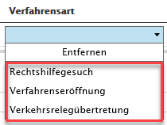

Verkehrsregelübertretungen | Meldung an Polizei
Übersicht
Allgemeine Informationen
Mit der Lizenz 'Bussenverwaltung' haben User (erfordert eigene Rolle) die Möglichkeit, die bei einem Einsatz gemachten Verkehrsübertretungen, der zuständigen Polizei zu begründen, damit sie von den Ausnahmebestimmungen profitieren.
In den Stammdaten unter 'Auswahllisten' werden die vom Rettungsdienst angewendeten Stammdaten 'Kanton/Polizei' und 'Gerät/Standort/Blitzer' hinterlegt.
Hinweis: Die Bussenverwaltung für Sanostat Evo ist ein eigenständiges Zusatzmodul und ist nicht im Basis - Paket von Sanostat Evo enthalten.
Haben wir Ihr Interesse geweckt? - Dann fordern Sie jetzt ein unverbindliches Angebot bei uns an.
BST Informatik GmbH
Mail: support@ticket.bst.ch
Tel. 071 274 90 30
Überblick der Funktionen
Sichtbarkeitssteuerung
Die Sichtbarkeit des Akkordeons für die Bussenverwaltung kann mittels einer eigenen neuen Rolle (bedingt Lizenz Bussenverwaltung) gesteuert werden.
Somit haben SuperUser und Administratoren von Sanostat Evo jederzeit den Überblick, welcher MitarbeiterIn Bussen erfassen und bearbeiten kann.
Die Rollenzuteilung kann in den Einstellungen / Rollen zuordnen mutiert werden.
 Besitzt ein MitarbeiterIn die Rolle "Bussenverwaltung" so werden die neuen Berechtigungen beim nächsten Neustart des Sanostat Evo Clients aktiviert.
Besitzt ein MitarbeiterIn die Rolle "Bussenverwaltung" so werden die neuen Berechtigungen beim nächsten Neustart des Sanostat Evo Clients aktiviert.
Nach dem Neustart ist das Akkordeon "Bussenverwaltung" auf dem Einsatz sichtbar.
Erfassung von Verkehrsübertretungen
Die Erfassung einer Verkehrsübertretung wird immer auf dem Einsatz vorgenommen.
Hier müssen folgende Schritte beachtet werden:
Auf den gewünschten Einsatz navigieren
Akkordeon "Bussenverwaltung" öffnen (Bedingt zugewiesenen Rolle)
+ für eine neue Busse auswählen
Nun wird eine neue Busse von Sanostat Evo für den ausgewählten Einsatz erzeugt.
Jetzt müssen einige Informationen / Angaben eingetragen werden:
Zeitpunkt
Kanton / Polizei
Bussenart
Verfahrensart
Referenznummer
Sachverhalt

Nachdem die Informationen korrekt eingetragen wurden, kann die Verkehrsübertretung via PDF / WORD angezeigt resp. gespeichert werden.
 Die Vorschau in Sanostat Evo ist nur im PDF-Format möglich.
Die Vorschau in Sanostat Evo ist nur im PDF-Format möglich.
Erweiterte Filterung (Bussenverwaltung)
Mit dem Erwerb der Lizenz für das Modul Bussenverwaltung werden ebenso neue Filter zur Verfügung gestellt, mit welchen wichtige Informationen, Bearbeitungsstände oder Auswertungen gemacht werden können.

Stammdatenverwaltung / Bussenverwaltung
In den Stammdaten von Sanostat Evo können unter dem Punkt "Auswahllisten" folgende Stammdaten gesetzt / erfasst werden.
Bussenverwaltung Gerät / Standort / Blitzer (Kann vom Mitarbeiter mit der Rolle "Stammdatenverwaltung" mutiert werden)
Bussenverwaltung Kanton / Polizei (wird durch Konfiguration von BST gesetzt)
Bussenverwaltung Verfahrensart (wird durch Konfiguration von BST gesetzt)